## Test Driven Development ### (TDD) Una perspectiva que puede gustar 🚀 <br /> <br /> <div class="logo"> <img src="assets/me.png" class="image-logo rounded"/> </div> <em> Robert Stevens Pineda (stevenscol.co) <!-- .element class="footer" --> </em> --- ### ¿Por qué probamos el código? - Nos lo exigen en el proyecto (Coverage) 📊<!-- .element class="fragment" --> - Mejoramiento de la calidad <!-- .element class="fragment" --> - Reducción de bugs 🐞<!-- .element class="fragment" --> - Mantenibilidad (Refactoring) ⛽<!-- .element class="fragment" --> - Evolución (Nuevas Características) 🏋️♂️<!-- .element class="fragment" --> - ... <!-- .element class="fragment" --> - Es nuestra RESPONSABILIDAD y NO debe ser NEGOCIABLE 👀<!-- .element class="fragment" --> --- ### Pruebas automatizadas Código que describe los requerimientos y valida la correctividad de nuestra aplicación. <!-- .element class="fragment" --> --- ### Pirámide del Testing <div class="image-full-size"> 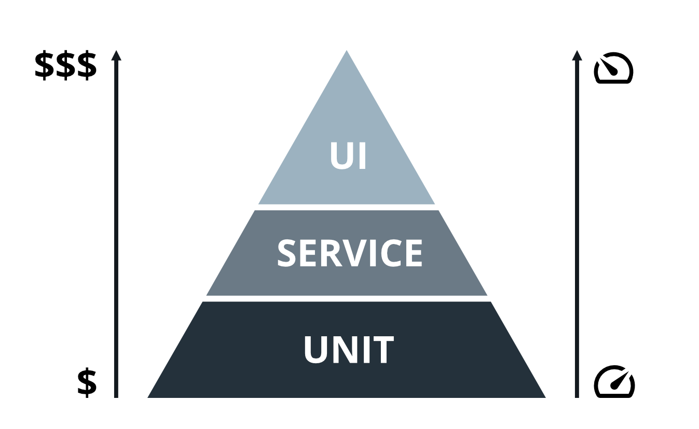 </div> --- ### Test Driven Development Es una metódología de desarrollo cuyo objetivo es escribir primero las pruebas antes que su implentación <!-- .element class="fragment" --> --- Se basa en tres reglas básicas: <!-- .element class="fragment" --> 1. No escribir código productivo hasta no tener una prueba que falle <!-- .element class="fragment" --> 2. No escribir más de una prueba unitario suficiente para fallar <!-- .element class="fragment" --> 3. No escribirás más código del necesario para hacer pasar el test <!-- .element class="fragment" --> --- ### Ciclo del TDD <div class="image-medium-size"> 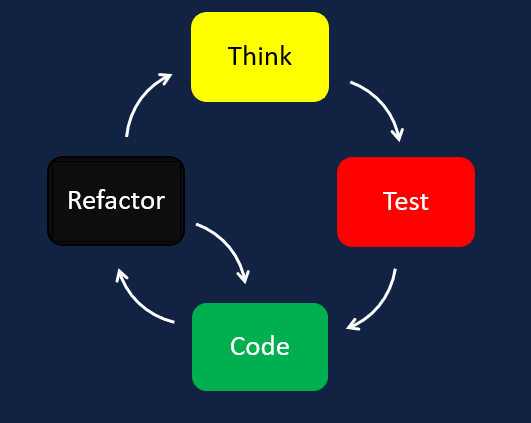 </div> --- ### ¿Por qué TDD? - Permite descubrir el diseño y comportamiento temprano antes de ser implementado <!-- .element class="fragment" --> - Completitud de los requerimientos <!-- .element class="fragment" --> - Mejora notable de la Testeabilidad y otros atributos de calidad de la solución <!-- .element class="fragment" --> - Ayuda a manejar la complejidad del software (divide y vencerás) <!-- .element class="fragment" --> - ...<!-- .element class="fragment" --> --- - Es una hábilidad muy bien valorada <!-- .element class="fragment" --> - Enseña a construir mejores pruebas unitarias<!-- .element class="fragment" --> - Facilita la enseñanza en el desarrollo de software<!-- .element class="fragment" --> --- ### Coverage 100% <div class="image-medium-size"> 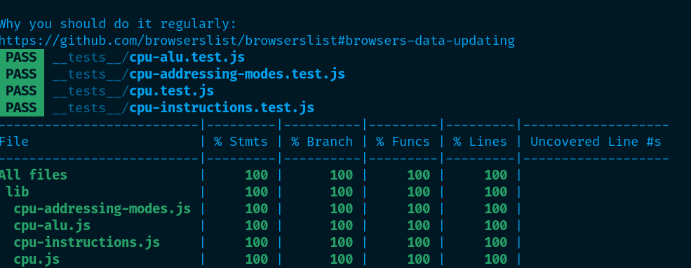 </div> --- <div class="image-full-size"> <img src="assets/tdd/approve.gif" /> </div> --- ### Desventajas - No es una bala de plata <!-- .element class="fragment" --> - Curva de aprendizaje y adaptación <!-- .element class="fragment" --> - Mayor esfuerzo (?) <!-- .element class="fragment" --> --- ### ¿Dónde continuar? - Learn TDD (GitHub) <!-- .element class="fragment" --> https://github.com/dwyl/learn-tdd <!-- .element class="fragment" --> - Mi Canal de Youtube <!-- .element class="fragment" --> https://youtube.com/c/ScolDev/videos <!-- .element class="fragment" --> - Talleres TDD <!-- .element class="fragment" --> - Como este https://github.com/StevensCol/tdd-practico-tic-tac-toe <!-- .element class="fragment" --> --- <!-- .slide: data-background="#151522" --> ## Taller Práctico TDD ### Tic-Tac-Toe con TDD <img src="assets/tdd/tic-tac-toe.png" /> --- <!-- .slide: data-background="#151522" --> <section class="image-caption"> 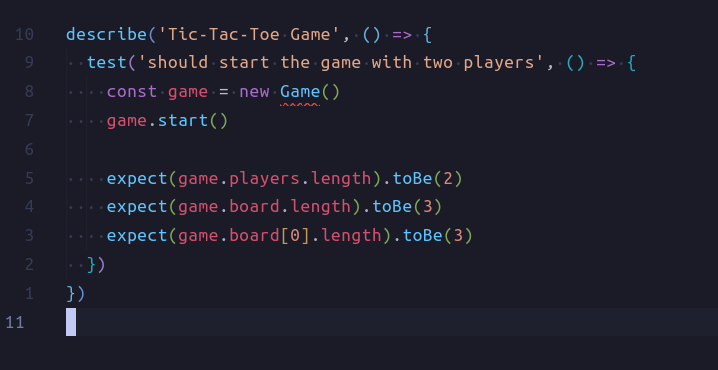 <em>Escribe una prueba que falle</em> </section> --- <!-- .slide: data-background="#151522" --> <section class="image-caption landscape-md"> 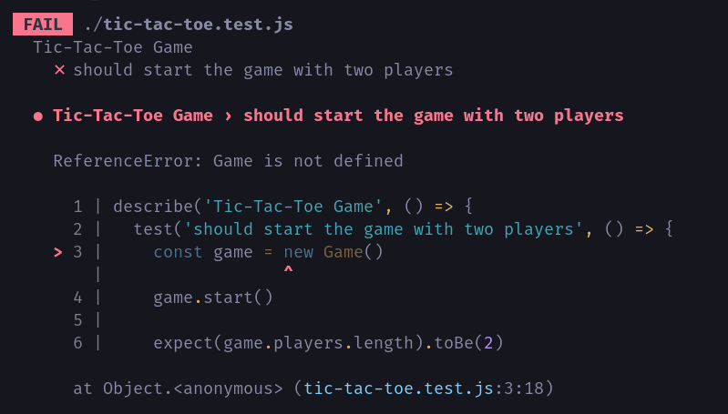 <em>Ejecuta la prueba</em> </section> --- <!-- .slide: data-background="#151522" --> <section class="image-caption"> 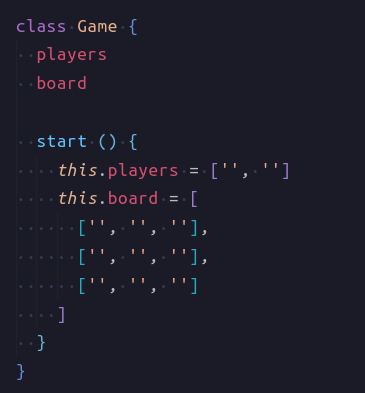 <em>Escribir el código necesario para que pase</em> </section> --- <!-- .slide: data-background="#151522" --> <section class="image-caption landscape-md"> 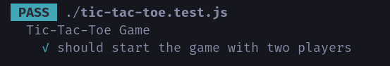 <em>La prueba pasa</em> </section> --- <!-- .slide: data-background="#151522" --> <section class="image-caption landscape-md"> 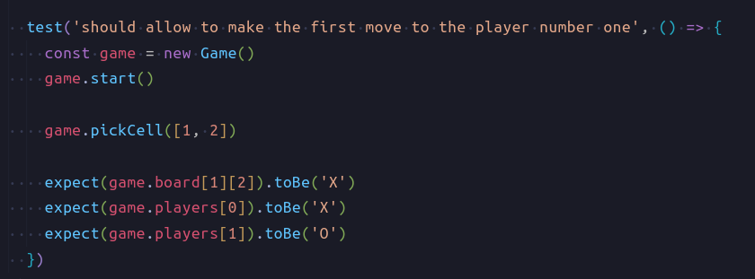 <em>Escribe una prueba que falle</em> </section> --- <!-- .slide: data-background="#151522" --> <section class="image-caption landscape-md"> 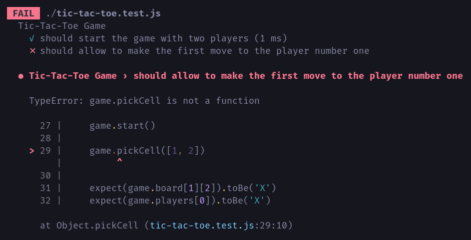 <em>Ejecuta la prueba</em> </section> --- <!-- .slide: data-background="#151522" --> <section class="image-caption landscape-md"> 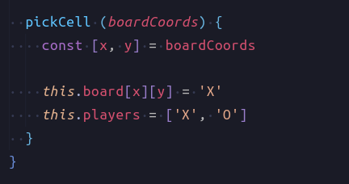 <em>Escribir el código necesario para que pase</em> </section> --- <!-- .slide: data-background="#151522" --> <section class="image-caption landscape-md"> 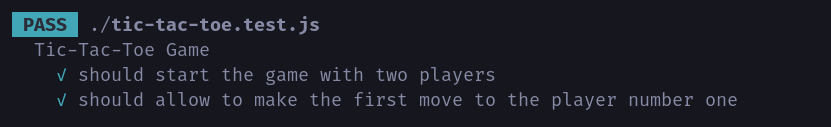 <em>La prueba pasa</em> </section> --- <!-- .slide: data-background="#151522" --> <section class="image-caption landscape-md"> 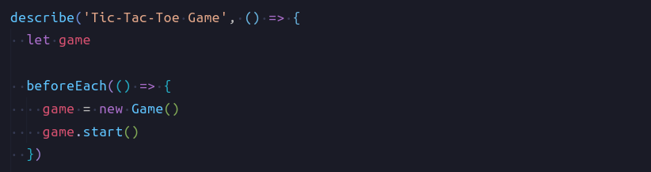 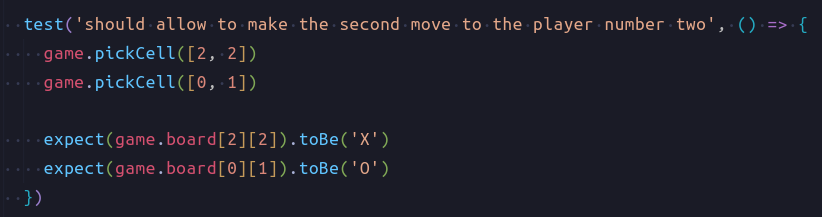 <em>Escribe una prueba que falle</em> </section> --- <!-- .slide: data-background="#151522" --> <section class="image-caption landscape-md"> 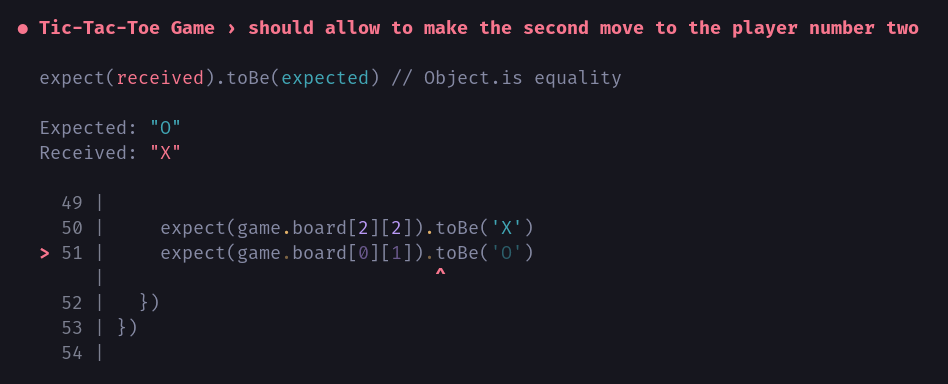 <em>Ejecuta la prueba</em> </section> --- <!-- .slide: data-background="#151522" --> <section class="image-caption portrait-lg"> 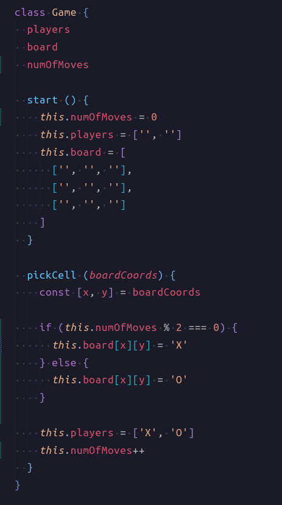 <em>Escribir el código necesario para que pase</em> </section> --- <!-- .slide: data-background="#151522" --> <section class="image-caption landscape-md"> 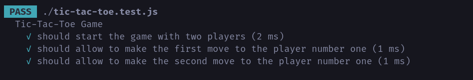 <em>La prueba pasa</em> </section> --- <!-- .slide: data-background="#151522" --> <section class="image-caption portrait-lg"> 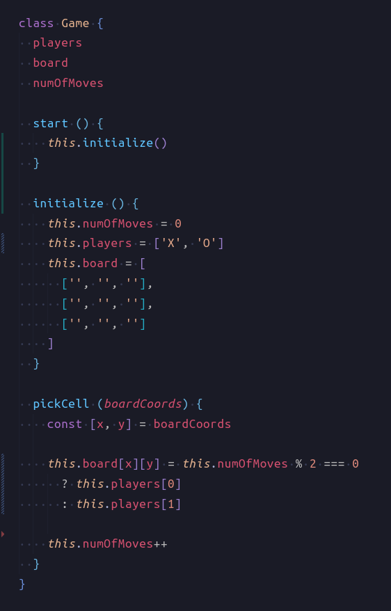 <em>Refactorización</em> </section> --- <!-- .slide: data-background="#151522" --> <section class="image-caption landscape-md"> 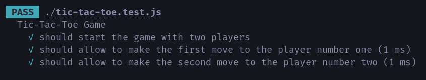 <em>Las pruebas nos protegen</em> </section> --- <!-- .slide: data-background="#151522" --> <section class="image-caption landscape-md"> 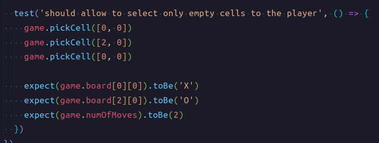 <em>Escribe una prueba que falle</em> </section> --- <!-- .slide: data-background="#151522" --> <section class="image-caption landscape-md"> 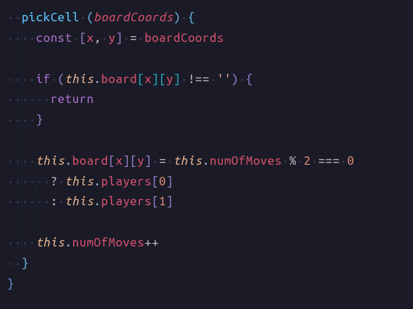 <em>Escribir el código necesario para que pase</em> </section> --- <!-- .slide: data-background="#151522" --> <section class="image-caption landscape-md"> 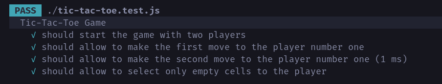 <em>La prueba pasa</em> </section> --- ¿Preguntas? --- ¡Gracias!